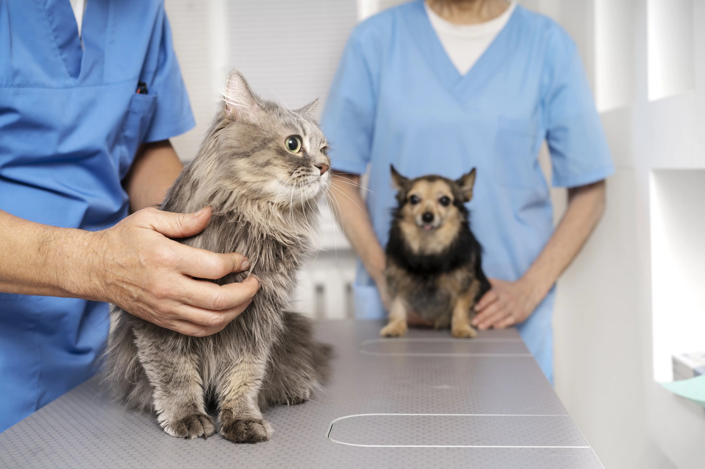
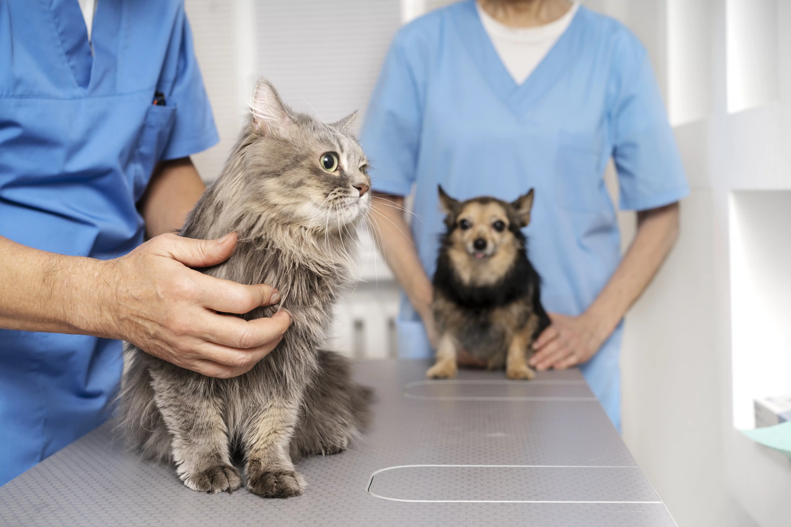

¡Te damos la bienvenida!
Aqui en CENTRAL-VET, nos complace darte la bienvenida a nuestra comunidad dedicada al cuidado y bienestar de tus queridas mascotas
Somos más que una red de clínicas veterinarias; somos amantes de los animales
comprometidos con proporcionar la mejor atención posible para tus compañeros peludos.
En nuestro sitio, encontrarás una amplia gama de servicios y recursos
diseñados para mantener a tus mascotas saludables y felices.
Desde consultas veterinarias y programas de vacunación
hasta servicios de cirugía y cuidado especializado.
Estamos aquí para satisfacer todas las necesidades de tus amigos de cuatro patas.
Explora nuestras secciones para obtener información útil sobre la salud y el cuidado de mascotas.
así como consejos prácticos proporcionados por nuestro experimentado equipo de veterinarios.
Nos esforzamos por ser tu recurso confiable para todo lo relacionado con la salud animal.
En nuestras clínicas, creemos que la medicina preventiva es fundamental para prolongar la vida y la salud de tu mascota, por lo que nos enfocamos en el asesoramiento y equipos de alta tecnología para que tus mascotas tengan una vida saludable y más duradera.